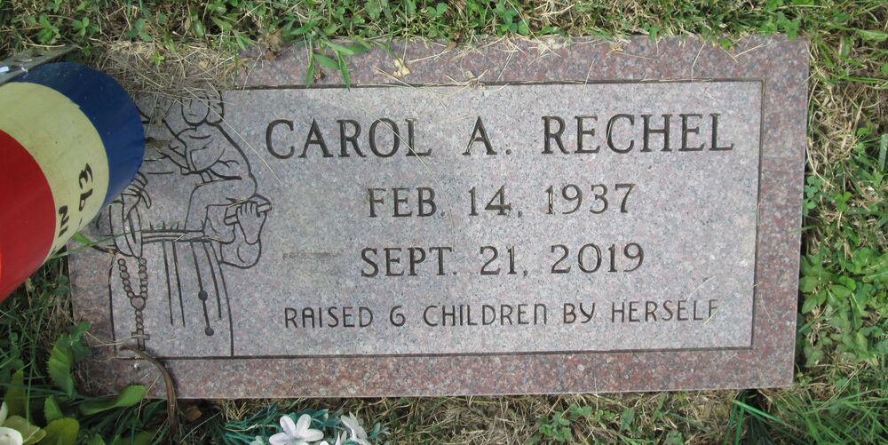

Brewster line · Eugene's wife · Cincinnati, Ohio, and Campbell County, Kentucky
Also known as: Carol A. Hillman; Carol Henderson; Carol Brewster; Carol Ann Rechel (her name at death)
Profile status: DOCUMENTED birth, death, burial and her marriage to Eugene in the Kentucky marriage index; her other marriages and her father rest on a family note and Find a Grave links UNPROVED
Portrait of Carol as a young woman (photo added by Bob Pettit, Find a Grave).
Quick Facts
Born
14 February 1937, Cincinnati, Hamilton County, Ohio DOCUMENTED Her obituary on Find a Grave and her headstone; her ages on the 1977 and 1979 Kentucky marriage index entries (40 and 42) fit.
Occupation
Executive secretary for the State of Ohio, GE and the Ohio Bureau of Workers' Compensation DOCUMENTED
Religion
Catholic SUPPORTED Her funeral was a Mass of Christian Burial at St. Matthias the Apostle Church, Cincinnati, and she is buried in a Catholic cemetery.
Residence
Campbell County, Kentucky, in 1977–79 SUPPORTED; Warren County, Ohio, at her death in 2019 DOCUMENTED
Died
21 September 2019, at home, Warren County, Ohio, aged 82 DOCUMENTED
Funeral
Mass of Christian Burial, 27 September 2019, St. Matthias the Apostle Church, Cincinnati; Gilligan Funeral Homes DOCUMENTED
Buried
Saint Joseph Cemetery, Cincinnati, Hamilton County, Ohio, Section 15A, Lot 8, Grave 3 SUPPORTED; headstone "Carol A. Rechel · Feb. 14, 1937 · Sept. 21, 2019 · Raised 6 children by herself"
Immediate Family
Parents
H. Clyde Craig (1901–1939) UNPROVED Linked as her father on Find a Grave; no record naming him has been read yet. Her mother is not yet known.
Spouses
Paul Leroy Hillman (1935–2000), about 10 years SUPPORTED Danny Henderson, about 2 years UNPROVED Eugene E. Brewster (1933–1983), married 19 November 1977 and again 9 November 1979, Campbell County, Kentucky; still married at his death, 16 October 1983 DOCUMENTED Norman Rechel, about 25 years, her husband at her death DOCUMENTED The order and lengths come from a family note on her Find a Grave memorial. Paul Hillman's 2000 death notice calls her his "former wife Carol Brewster."
Children
Vicki (Hillman) Cunningham, died before 2019
Christopher Hillman, died before 2019
Mary Beth (Hillman) Greco
Patrick Hillman
Paula (Hillman) Wallace
Jill (Large)
Named in her 2019 obituary and in Paul Hillman's 2000 death notice DOCUMENTED. The first five were with Paul Hillman and Jill with Danny Henderson, per the family note UNPROVED. She had no children with Eugene.
14 Feb 1937 · age 0 Born, Cincinnati, Ohio DOCUMENTED
1939 · age 2 Her father, H. Clyde Craig, died UNPROVED
19 Nov 1977 · age 40 Married Eugene E. Brewster, 43, Campbell County, Kentucky (certificate 24676) DOCUMENTED
9 Nov 1979 · age 42 Married Eugene again, Campbell County, Kentucky (certificate 28705) DOCUMENTED
16 Oct 1983 · age 46 Widowed when Eugene died at Fairfield, Ohio DOCUMENTED
21 Sep 2019 · age 82 Died at home, Warren County, Ohio DOCUMENTED
27 Sep 2019 Funeral Mass at St. Matthias the Apostle; buried, Saint Joseph Cemetery, Cincinnati SUPPORTED
Life Story
Carol Ann Craig was born in Cincinnati on February 14, 1937. DOCUMENTED Her father, H. Clyde Craig, died when she was two. UNPROVED She worked her whole life as an executive secretary, for the State of Ohio, for GE and for the Bureau of Workers' Compensation, and her obituary says she was proud to raise her children while she worked. DOCUMENTED Her headstone puts it more plainly: "Raised 6 children by herself." DOCUMENTED
As Carol A. Hillman, she married Eugene E. Brewster in Campbell County, Kentucky, on November 19, 1977, and the two married again there on November 9, 1979. DOCUMENTED Her family remembered the marriage as "Gene Brewster, no children, 8 years," so they may have been together before 1977. UNPROVED They were still married when Eugene died in October 1983. DOCUMENTED Years later she was still known as Carol Brewster.
Carol died peacefully at home in Warren County, Ohio, on September 21, 2019, surrounded by family, survived by her husband of 25 years, Norman Rechel, four of her children, 13 grandchildren and 15 great-grandchildren. DOCUMENTED She is buried in Saint Joseph Cemetery, Cincinnati. SUPPORTED
Photo Gallery
Carol as a young woman. Photo added by Bob Pettit, Find a Grave

Her headstone at Saint Joseph Cemetery: "Raised 6 children by herself." Photo by Carol S, Find a Grave
Sources and Evidence
Find a Grave, Carol Ann Craig Hillman Henderson Brewster Rechel, memorial 203374794: born 14 February 1937, Cincinnati; died 21 September 2019, Warren County, Ohio; buried Saint Joseph Cemetery, Section 15A, Lot 8, Grave 3; obituary from Gilligan Funeral Homes; family note on her four marriages; father linked as H. Clyde Craig; two photos (read 10 November 2026) DOCUMENTED
Kentucky marriage index, Campbell County: Eugene E. Brewster, 43, and Carol A. Hillman, 40, 19 November 1977, certificate 24676; Eugene E. Brewster and Carol Brewster, 42, 9 November 1979, certificate 28705 (FamilySearch QKHD-K4RL) DOCUMENTED
Death notice of Paul Leroy Hillman, December 2000 (on Find a Grave memorial 84681677): names their children and "former wife Carol Brewster" DOCUMENTED
FamilySearch record CKMJ-5N3Z (death and burial index) SUPPORTED
Ohio death index, Eugene E. Brewster, 16 October 1983, married (his profile page) DOCUMENTED
Grades: DOCUMENTED an original record says it · SUPPORTED several records point to it · FAMILY ACCOUNT the family's own telling · UNPROVED a lead, not proved.
Research Notes and Open Questions
Her mother's name, and a record naming H. Clyde Craig as her father (her 1937 birth record or a marriage application).
The two Kentucky marriage certificates, 24676 (1977) and 28705 (1979), would give her parents and her earlier marriages. The 1977 index counts one earlier marriage and the 1979 index two.
Her family may have photos of Eugene from 1977–83.
DNA
No DNA matches linked yet.
Profile history: Created 10 November 2026 from her Find a Grave memorial and obituary, the Kentucky marriage index, and Paul Hillman's death notice.